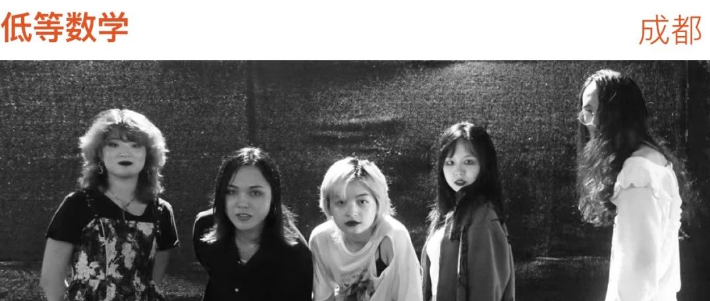

低等数学：作为酷儿音乐人，我们为什么走出卧室｜南京早上好
坏酷儿厨子
坏酷儿厨房bad queer cook
2024年01月14日 19:31
四川
低等数学是不被定义的，也是在边缘发声的
。TA 们的作品不仅是 RIOT GRRRL 的现代化演绎，更是对当代乐队文化中性别表达的突破。TA 们在做的是勇敢走出束缚、是反理性中心主义、是
0=∞ ……
低等数学从卧室音乐人演化而来，月亮、思邪、卯月末三人的主场从上海到成都，乐队也在一步步壮大、成长，认识了桃子、星星、咩咩和知了。TA 们一直坚持把音乐作为一种语言，尝试以切身经历为起点与周遭的一切去对话。TA 们也在创作中不断引入不同音乐体系中的元素，不为作品定性，也不刻意装点，无论是 Dream Pop、Shoegaze 还是 Post-Punk，内里包裹的都是这群人最鲜活的自我。
TA 们说
每个人身上都有酷儿性，而低等数学选择用非逻辑性的歌词与音乐作表达载体，通过《未命名》，也通过这首《回到世界的沙漠》持续输出着结实的少数声音。
南京早上好
Vol.09
————————————
对话 · 低等数学
1、大家现在是在全职做音乐吗，有过人员更替吗？能否讲一讲“低等数学”这个名字的来源。
月亮：
虽然没有其他的全职工作，不过也不算全职做音乐，好像暂时没有当做职业去看待做音乐这件事。一开始我们是卧室音乐人，有三位成员，最近在成都又招募了三位乐手，还打算招募一位可以参与创编的吉他手，目前也还没有过成员更替。
我在大学时期有组过一个乐队叫高等数学，后来毕业了找到了各方面很同路、很契合的朋友之后，包括自己的价值观也在大学毕业前后的那个时期有了很多探索和确立，走出了以往的很多束缚，从简单的东西中找到了某种答案，所以想到了低等数学这个名字，当时三个人商量了一下，比较随性地定下了这个名字，我们的第一个 logo 上写着 0=∞。
思邪：
我目前的收入来源主要是给人做编曲和配乐，暂时不准备找全职工作，更喜欢随意的生活状态。「低等数学」这个名字对我来说意味着不想去试图迎合某个既定的等级框架来被人认可，享受处于低等的状态，还有一点朝着理性中心主义竖中指的含义（笑）。
「0=∞」这个标志对我来说意味着虽然我们是被剥夺的人，但我们同时也拥有无限可能。
卯月末：
我目前在江苏读研，跟乐队其她成员不在一块儿，所以也只能在词曲写作上参与一下。很不甘心来着。说到「低等数学」这个名字，虽然不是我起的，但我也总会说是得名于我们数学太差。不过其实只是我数学是最差的吧。有时会让人以为我们是数摇乐队就是了。
2、是什么契机让你们决定“走出卧室”的？
月亮：
我是喜欢看演出的乐迷，想要在这个领域创造不一样的、属于我们自己的现场作品。今年各种时机和条件相对成熟了，就下定决心招募了乐手一起做现场，
乐队也不止是一起做音乐的伙伴，我认为这也是一种关系和与人链接的方式
，所以也有想要在新的城市——成都交朋友的那种动力。
思邪：
看 live 看了很多年了，一直很想和朋友们一起上台演出，感觉在现场，人与人之间会产生很奇妙的连接。在乐队演出领域，我发现我们这样的人出现的很少，
所以也想让更多人看到我们不一样的性别表达，看到我们的性别存在是如何在音乐中现身的。
我之前几年一直在做卧室制作人，攒了一些 demo，现在想和乐手们一起把它们完成到可以现场呈现给别人的样子。
卯月末：
我或许还真不算走出来了……虽然一直是学音乐的，但始终不是很擅长公开表演。眼下也没办法切身参与进来，希望今后有机会能挑战下自己吧。
3、将乐队定义成酷儿音乐项目，是希望强调成员的身份，还是想更清晰地袒露乐队创作的方向？你们的音乐也在持续展现酷儿这个主题吗？也给我们讲述一下你们感受到的、目前大环境里这一群体的生存现状吧。
月亮：
我觉得强调身份是重要的，真诚的创作必然也会和我的生活和身份相关联，我始终认为我和我们的故事还没有被足够的讲述，不过其实我们乐队并不是每一个成员都属于这个群体。我看过一部相关的电影，里面有一位中年女性，她在周围的亲戚都希望她在丈夫死后找个老伴的时刻，选择了和比自己小非常多的男友在一起，这部片子让我相信
每个人身上都有酷儿性，在某个时刻我们会选择更加少数艰难却是自己相信的一条路，选择成为一个怪人。
思邪：
我希望我们的创作是可以体现我们身上的酷儿性的，
我对这个词的理解，除了性别上的不被定义外，说的也是我们关注每一种被边缘、被定义为不正常的体验，
这些都会在我们未来的创作里体现出来。这里的酷儿群体总体上来说是失声的，我们被各种方式妖魔化，也总无法澄清自己。近期看到网上关于跨性别话题的讨论，各种嘲讽和玩梗总是让我非常创伤。我们乐队的第一首歌叫《未命名》，创作它是在 21 年我们的性别社团遇到阻力的时候。这个歌名也在尝试表达我们未被命名的跨性别体验，以此让更多人看到我们的存在。
卯月末：
我个人所理解的「酷儿性」是一种「不可名状」的特性。它并不是一个被规定为「特立独行」或「不被定义」的类型和位置，而是受到排除和模棱两可的状态，所谓「不被定义」不是一个形容词，而是持续的行动。
对我来说，「酷儿」是我创作的一大基石和原点，也是我所追求的方向。这未必一定得是一种身份或表达，也可以是一种立身于此的持续感受。我并没有觉得我在音乐上很好地表达了这些方面，这是我将不断努力和追求的。至于生存现状……很难说，可能总会有人过得还好吧，不过我身边的酷儿朋友们各有各的艰难就是了。作为一个群体，只感觉越发艰难了。听思邪的吧，她说得比我好。
4、低等数学正在做的事情，有什么目的性吗，比如说他想要提升大众对这一群体的认同吗，或者只是想找到同好愉悦自己？酷儿乐队这个标签有给你们带来任何正面或负面的影响吗？
月亮：
做乐队是我的一种存在方式，是和乐队成员彼此的陪伴交流，也是和听歌的朋友的一种陪伴交流。音乐是另一种语言，可以说更多难以说出口的话。酷儿乐队的宣称是可以让我们找到更多过着类似生活的人，这一点很好。
思邪：
想表达自己，也让人看到生命的另一种可能。因为我们影响力还有限，所以还没有因为这个标签受到过什么恶评，反而让一些酷儿伙伴有机会注意到我们。
卯月末：
个人感觉我们的活动主要是出于对自我表达和创造性劳动的需要，在感到说不出话的时候，自然地想要用音乐和非逻辑性的歌词去表达。在此基础上，当然希望能注入我们自己对各种问题和现象的思考与理解，包括酷儿、性少数、神经谱系多样等等。但我不认为这是可以强求的。作为一个标签在我目前来看，是不得不如此，但没什么不好的。
5、能不能分别从作曲、作词、编曲等维度为我们讲一讲低等数学正在做的多元表达。
月亮：
我觉得作为唱作人，多元表达意味着，我在探索我作为酷儿能写出的东西是什么样子的，我一直在寻找自己的声音，它是什么频段的，感觉上音色是飘起来的还是结实的。
从作词的角度，《回到世界的沙漠》这首词其实是我和朋友们一起共同创作的，是接龙的方式写的，很巧的是我写的内容也恰好符合我对朋友们的情感。其实这是我第一次写诗，之后就开始写更多诗了，所以它也是我的诗的第一次出生。
关于作曲，沙漠这首歌的作曲是思邪先 jam 出来的和弦进行，我把诗哼唱进去的形式做出来的，去感受不同的音调起伏在文字里流动，和自己对应的身体情绪是很有意思的一件事。
卯月末：
说实话在编曲和作曲中我的思维还是很主流音乐的，大概还是我个人能力的问题。很长一段时间里写作的时候首先考虑的会是好听的和声、旋律和音色，这个「好听」的标准，肯定极大程度上是在主流创编体系底下培养和形成的。尽管理解，但在个人情感上又不愿意大张旗鼓地破坏「音乐性」……我个人的想法是尽可能引入和融合更多不同音乐体系的因素。不作为装点的元素，而是作为内在的某种思维。
思邪：
我主要负责编曲的部分。我本是一个很依赖理性思考的人，但在创作的过程中，我也在尝试练习去信任自己的身体，用身体去作出音乐上的选择。和卯月末类似，回看我自己的创作，我也会感觉存在一种拉扯，一边是受到音乐专业体系冷静凝视的部分，一边是身体的感受挣扎着从结构里渗出丝丝点点。我觉得自己还在探索的过程中，希望未来能做到更忠实地用音乐呈现自己的边缘体验。
6、《回到世界的沙漠》是在什么状态下创作出来的，它表达的是什么。你们是从什么渠道了解到《南早》项目的，为什么会用这首歌来投《南早》？
月亮：
回到世界的沙漠这首歌的创作动机是，当我的生命似乎陷入静止甚至触摸死亡的时候，接收到了各种朋友的爱，就好像从高空被轻轻地接住了，是那个时候的心情，我觉得我想要记住这个时刻。
我在艺术书展遇到了一位有给《南早》做过视觉设计的朋友，她给我介绍了南早之前的一张专辑，她的其它作品也很打动我，所以对南早这个项目有了一些信任亲近的感觉，就回家搜索了投稿的信息。回到世界的沙漠是当时比较满意的作品，正好也还没有在其它平台发布，很高兴可以入选。
思邪：
这首歌最初的编曲 demo 完成得很早，是 19 年的时候我在宿舍里做的一首纯音乐，和弦进行是我在弹琴的时候 jam 出来的，本来风格上更偏 dream pop 一些，是比较轻快的氛围，但我一直想给这首 demo 配上词曲变成更完整的作品。后来看到了月亮的诗，我感到 TA 的诗和这个编曲 demo 有一些微妙的联系，刚好 TA 也想把这首诗做成歌，我们就一起完成了编曲的改动，变成了偏盯鞋的风格，还一起写了旋律，根据词曲情绪的推进重新编排了结构，我觉得这些改动也让整首歌的情绪更下沉和深入了。
7、这首歌似乎讲述了一个从孕育到出生的过程，那为什么出生之后你们会选择“沙漠”这个意象来形容这个世界。
月亮：
某种程度上来说，
我的生活是艰难的，而接受这样的艰难是一个治愈的过程
，我可以不再觉得我必须要幸福地活着，活得很好，或者总是很快乐，过完全是好的好日子，所以我觉得有一种在沙漠徒步的感觉，水源贫乏，但有时候也很幸福于能看到不一样的景。
8、这是一首盯鞋作品，那接下来你们会继续沿着盯鞋的方向去创作吗？
月亮：
我会在做完精神分析或者做梦醒来的时候很有创作欲，就像心里的能量需要一个出口一样去写歌，这和盯鞋的那种音墙给我的感觉很契合，会有一些梦境的感受。
音乐是有造梦能力的
，感觉是很适合的媒介。但也很想做暴女朋克！以及后朋/电子。
思邪：
我也喜欢盯鞋的氛围感，之后想尝试融入电子和后朋的元素。
卯月末：
我一直很喜欢盯鞋，很想继续做些。当然不可能只做盯鞋。
9、你们的作品受到过哪些乐队和音乐人的影响吗？他们的作品为什么吸引到你们。平时你们会听一些什么风格的音乐。
月亮：
在写沙漠这首歌的时候，经常听白百和海朋森的歌，是有受到影响的。白百的歌也会给我一种，在探索自己深入的潜意识的感觉，很喜欢的一首是《不存在的父亲》。我很爱去找寻国内的女性和酷儿主导创作的乐队，平时听的一些音乐人和乐队包括：椎名林檎、户川纯、方大同（neosoul）、披萨脸、小王、甜蜜抽搐（后面主创成立了假高潮乐队）、蛙池、bikini kill、sonicave、卡西恩、ic3peak、硬糖革命、南方酸性咪咪。
我觉得我很喜欢可以真诚传达痛苦和愤怒的音乐人，我觉得我们需要去探索、表达一些沉重的东西，
比如我喜欢的椎名林檎、户川纯、披萨脸、小王…顺便一提，最近爱听 ambient，是氛围电子。
思邪：
沙漠这首歌创作方向上受到白百影响比较多，我觉得白百也会关注那些很细微的、不被表达过的情绪体验，听 TA 们的歌会很受触动。编曲和音色方面也受到 My Bloody Valentine、She's Green、The fin.等等盯鞋乐队的影响，因为喜欢那种更流动、模糊的氛围感。平时除了盯鞋以外，会听后朋、Techno、Deconstructed Club，另外也很喜欢 Funk 和 Disco 的律动，喜欢后核那种氛围和情绪与重型噪音混在一起出现的张力。Deconstructed Club 这个风格的制作人有很多跨性别者，比如 Arca 和 Sophie，TA 们对音色的使用和对音乐结构的安排非常天马行空，很大地拓宽了我对流行音乐的理解。
卯月末：
我个人喜欢梦泡、后摇、盯鞋、爵士之类的。
10、未来你们希望低等数学能成为一支怎样的乐队，会期待乐队的职业化吗？接下来有什么音乐上的计划可以分享吗？
月亮：
我自己不会很有目的地去追求职业化，我觉得如果要依赖这个来赚钱的话，我想象中会比较难平衡作品的创作，至少这个乐队创建的目的不是为了赚钱糊口，可能会有别的音乐类工作来赚钱。但如果发展到不刻意为之也可以糊口的程度当然是很理想的状态了。接下来希望可以去一些小的场地先演起来，希望和乐队的伙伴们磨合顺利，把手上的 demo 打磨一下，希望未来可以做完整一些的专辑。
思邪：
我想的和月亮说的差不多，不准备把乐队作为赚钱的职业去发展，但它依然是我很重要的事业。
希望低等数学能成为一支自由的乐队，只表达自己想表达的内容
；希望未来可以有一些演出，被人看到和听到。
11、你们几人在创作中有过什么分歧吗，是怎么解决的，顺便给我们讲讲大家平时的相处模式吧。
月亮：
经常会有创作上的分歧，负责编曲的思邪和负责唱作的我吵架什么的，也是因为使用的语言不太一样有时候会会错意，思邪有接受过本科的音乐制作教育，因此可能会知道更多知识类的或者实操类的语言，我可能会更加感觉导向，我会更多负责觉知和创作动力的部分。
思邪：
因为受过音乐学院教育，我有时候会不自觉地执着于作品的「完成度」，所以可能会忽视更细微的感受性的东西，在这方面会和月亮产生分歧。但我也非常信任月亮的音乐感知，因为知道自己可能被专业知识和思维方式磨去了一些感受力，所以我们会尝试把各自在意的点梳理清楚，然后尽量找一个两方面都可以满足的办法。我和卯月末磨合得更久，因为我们是大学同学，从刚开始接触音乐制作时就一直一起做音乐，所以在合作的时候有很多思路相像的地方，分歧比较少，旋律（包括器乐）创作的方面我也会信任她的感觉。
12、成都这片土壤有为你们的创作带来什么灵感吗？
月亮：
我蛮喜欢成都的锐舞文化，这里有很丰富的文化在生长，成都有蛮大数量的愿意创作和交流艺术的人，我们第一次去家吧(JahBar)演了 rebel girl 的 cover，观众给了很好很支持性的鼓励，也是很疯的反馈。演出现场真的是一起创造的，包括前期策划、调音的朋友、演出的人、
观众的交流等等，我很骄傲能参与进这样一件事情里。
思邪：
之前我们在上海生活了很久，来成都之前又到广州和北京旅居了一下，来成都之后一下子感觉到城市很松弛，就决定留下来。除了月亮说的艺术氛围以外，成都的酷儿可见度相对来说很高（哪怕比起上海），在街头常常能看到性别表达不那么常规的人出现，这会让我感到放松和安全，似乎在这里不用再那么费力地掩饰自己了。这也会让我们创作音乐的心态变得更轻松。之前在上海的时候，生活成本很高，为了生存下去，周围很多人都在正轨上，不是在上学就是有一份体面的全职工作，在这样紧张的氛围里，很难有轻松的状态去创作。21 年我们乐队在上海成立，但直到 22 年底我们离开上海，实际上只做了《未命名》一首歌而已。现在我们住在成都的玉林社区，有很多艺术家和关心社会的人也住在这里，周边会有各种各样的文化和艺术活动，会感觉所处的空间被这样的空气包裹着。
13、你们有关注过当年的 RIOT GRRRL 吗？
月亮：
riot grrrl 文化对我想要做乐队、能够做乐队都有决定性的影响，我们在成都的第一次乐队形式的演出就是翻唱了 bikini kill 的 rebel girl，第一次排练这首歌的时候也超级兴奋，身体都会发抖，同时这也是排练起来比较简单的一首歌，推荐感兴趣的朋友都去试试。不如说，接触到暴女运动的时候我才真正喜欢上摇滚乐，才在这个领域找到自己的使命和立足之地。
思邪：
关注好多年了，之前也做过几次相关的行动和活动，比如在现场反对乐手性侵，还有组织相关放映和聚会。
暴女的社群会让人觉得终于可以不用在被顺直男包围的环境里玩乐队看演出，终于可以不再总是被边缘和不理解了。
这边有一个演出厂牌叫琴包 GrrrLive，TA 们之前办过几次暴女乐队的拼盘演出，台上女性/酷儿乐手们炸裂输出，台下女孩和酷儿们在前排 pogo 互相碰撞身体，这是在其它被顺直男主导的演出场景里不可能出现的，你会感觉到你确实是属于这个文化的。
14、能否推荐一些你们关注的年轻的乐队/音乐人，以及你们所在城市还有哪些值得关注的乐队吗？
月亮：
广州的 bAdbluEBiRds，看 TA 们的音乐会感觉玩的很放松；
披萨脸乐队，主唱的乐队 vlog 也给我很多支持陪伴那种感觉，喜欢《枕下板手》《boys are so hard to communicate》，它给我的启发是用一种相对能实现的方式去写歌，我也很喜欢现场主唱对冒犯她的观众的回击，看披萨脸演出会感觉看 TA 在台上拳打脚踢特别有力气；
东莞的蛙池乐队，很喜欢主唱作词里面的拼贴感；
暴力香槟乐队，不知道算不算很年轻的乐队，但是很喜欢，也是创作的很放松的感觉，但又承载了内容；
硬糖革命乐队，有我心目中暴女朋克 riot girl 的那种能量，也有玩一些有意思的东西比如 funk；
北京的女性核乐队小王，现场非常炸，会用轻柔的哼唱把观众的期待突然掉落到很有力量的核的部分哈哈；
西安的酷儿后朋克乐队 Rats and Pears属梨，一直非常想看 TA 们的演出，最喜欢的是读《房思琪的初恋乐园》后写的那首《渡鸦来信》，探讨了性侵受害者的议题，这是很需要被讲述的内容；
西安的甜蜜抽搐乐队，是我去朋克音乐节难得可以听到的女性主导的乐队，近期主唱 vv 组建的新乐队是一个新浪潮乐队假高潮，很有趣的名字哈哈；
（排名不分先后，喜欢的队还挺多的，我是国内暴女风格乐队的忠实听众哈哈）
思邪：
月亮推的所有队我也都很喜欢！补充一下，蛙池乐队对各种社会议题的探讨我觉得是很可贵的，TA 们的新一张专辑在音乐上也有了更多探索。类似蓝实验乐队，歌曲里会表现一些流动的情感和不被表达的负面情绪，音乐也很细腻。我们本来在同一个暴女酷儿的合辑项目里，但很让人难过的是主唱在今年去世了…
绝对纯洁，听起来是创作特别自由的一个乐队，很好奇如何有这样的创作状态；音乐人 Chainhaha，她的音乐感觉很有趣，玲珑怪诞又可爱，音乐的结构层次很不按常理出牌；白百EndlessWhite，第一次偶然在现场听到《我不是完美小孩》就哭了，真诚又愤怒地嘶吼喊叫，一种暴露自己脆弱的表达方式狠狠击中我；成都的后朋克乐队 Sonicave，看过她们的现场很炸很帅；广州的乐队支力少女，有一点朋克风格，现场很有活力；上海新成立的乐队烈性水母，感觉是对乐队很有激情的几个女生，希望在上海的朋友可以多去支持她们的现场。
卯月末（网易云同名），也是我们乐队的成员，她自己的音乐计划是关于她自己创作世界观设定中的一种自造语音乐，有一首流亡民族的民歌《月颂》很打动我，会想到自己的一些边缘体验。
—
最后播报一下
近期在成都的演出信息:
1.27 晚9:30 @成都家吧
和喜欢很久的乐队属梨和假高潮拼盘
(歌不多，也可以算暖场哈哈)💕
欢迎朋友们一起来大喊大叫！
南京早上好2023
——————————
👆专辑预售通道
《南京早上好2023》实体专辑已在秀动周边商城开启线上预售，数字专辑已在网易云音乐、qq音乐上线。